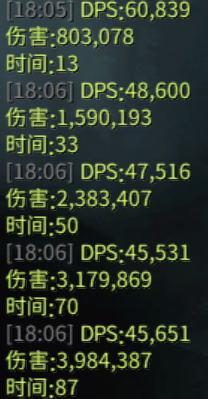

匕剑大剑直伤时空60k-45k
除魔，剑3，剑5，剑2，剑2=1=切武器|大剑4，大剑4=1=武器4黑=幻光纹章，大剑2，大剑3，剑5，剑5=1豆反色=职业f3，剑3，剑2，切武器反色=除魔，灾难法池，行动法池，衰老法池，衰老法池>10000=1豆反色=职业F3，衰老法池>7000=剑4，衰老法池>7650=大剑5，重力陷阱，剑2=1=剑2黑=剑切大剑，大剑2=1=大剑2黑=大剑切剑|3豆=职业F1，3豆=职业F2|
除魔,7,880|剑3,3,440|剑5,5,880,F3,50|剑2,2,440|切武器,`,150,3,310,F5,1,4,780|大剑4,4,780|武器4黑|幻光纹章,6,968,4,780|大剑2,2,710|大剑3,3,310|1豆反色,,,,,,,,,ifnot,,,b|职业f3,F3,10|切武器反色|灾难法池,8,800|行动法池,9,800|衰老法池,9,800|剑4,4,200,4,300,,,,,,,,,,,,,,,,0,,1|大剑5,5,480|重力陷阱,0,1100|剑2黑|剑切大剑,`,150,3,310,F5,1,4,560|大剑2黑|大剑切剑,`,150,5,780|3豆|职业F1,F1,10|职业F2,F2,10

配装项链刺客，其余全狂战士，全威能灌注
法印 武勇，精确 。
食物：100威力，70暴击效果，扳手：超级磨刀石， 本人灌注91点威能灌注（95挑半辅敏大概能28k附近，其他自测）
根据m佬的旧循环和新循环修改。不知道为什么突然起手不会释放f3来获取buff，也多了个大剑5获取buff，抛弃了之前错误的buff监控。buff依旧会断，但不多。增加了1豆反色来使用f3，避免浪费豆子。（起手循环依旧大剑4，f5的时候等2豆手动点f1和f2，全程无需关宏，之后无其他操作） 伤害肯定是浮动的，自行考虑是否使用
评论列表（29）
我0灌注，食物扳手都吃了，但是只能最多打40K， 取了几次色了，不知道啥原因
可能是延迟，全局或者技能的延迟只能自己调一下
剑切大剑这种怎么取色，
这个条件就是切武器，自然是切武器图标了
为什么通用技能这里包含了除魔，灾难法池，行动法池，衰老法池，重力陷阱 五个通用技能啊，我只有四个啊
你可以选择行动或者衰老2选1
我一身13灌注 62-45 感谢大佬分享 然后问下右边通用带的什么
幻光纹章，除魔，灾难，衰老，重力
剑4，大剑5从头到尾都不执行，
除魔，剑3，剑5，剑2，剑2=1=切武器|大剑4，大剑4=1=武器4黑=幻光纹章，大剑2，大剑3，剑5，剑5=1豆反色=职业f3，剑3，剑2，切武器反色=除魔，灾难法池，行动法池，衰老法池，衰老法池>10000=1豆反色=职业F3，衰老法池>7000=剑4，衰老法池>7650=大剑5，重力陷阱，剑2=1=剑2黑=剑切大剑，大剑2=1=大剑2黑=大剑切剑|3豆=职业F1，3豆=职业F2|
除魔,7,880|剑3,3,440|剑5,5,880,F3,50|剑2,2,440|切武器,`,150,3,310,F5,1,4,780|大剑4,4,780|武器4黑|幻光纹章,q,968,4,780|大剑2,2,710|大剑3,3,310|1豆反色,,,,,,,,,,,,b|职业f3,F3,10|切武器反色|灾难法池,e,800|行动法池,6,800|衰老法池,6,800|衰老法池>10000|衰老法池>7000|剑4,4,280,,,,,,,,,,,,,,,,,,0,,1|衰老法池>7650|大剑5,5,480|重力陷阱,b,1100|剑2黑|剑切大剑,`,150,3,310,F5,1,4,560|大剑2黑|大剑切剑,`,150,5,780|3豆|职业F1,F1,10|职业F2,F2,10
伤害91灌注34k上下
不好意思，之前误会了，你可能有些取色不对，剑4你要勾选连续点击
你们怎么打上那高的伤害，我怎么打都34k左右
你全局设置0.9试试，要么就是有些技能你取色可能不对，还有别用m佬的全黑跳转新功能
他的意思是这几个导入进去都变成循环技能了，取色的技能列表能看得到，不知道是不是bug
确实是这样，这些判断出现在f9取色列表里面
检查下你的>符号是不是英文，f9内应该不会存在技能x>200这个技能名称，如果还存在，下最新版
就是>符号的原因，从网页复制过来就会出现这个问题，另外55k那篇文章没问题，用的是最新版的
衰老法池>10000=1豆反色=职业F3，衰老法池>7000=剑4，衰老法池>7650这个怎么取色的？
这些是多重判断，你只要按f9，把里面的全取色了就行
衰老法池>10000，像这个10000是取色那个位置，7000是那个位置
哥们都跟你说了这是多重判断，你不需要管，你只需要把f9里面的全取色了就行
他问的是 10000 7000 是要取色取哪个位置，不是问为什么取这些。 取色取在哪都不知道，那要怎么取
我觉得他说的就是，其他按键正常怎么取色，这个就怎么取色。其他位置都不知道怎么取色就看教程。
我觉得你使用的可能是旧版，最新版是b6检查下，新版加入了>号的判断，如果你是旧版f9会出现技能1>5000这个技能名称
因为复制原因这个大于号没识别成符号 识别成一个字符串了 手动改一下 我也遇见了
除魔，剑3，剑5，剑2，剑2=1=切武器|大剑4，大剑4=1=武器4黑=幻光纹章，大剑2，大剑3，剑5，剑5=1豆反色=职业f3，剑3，剑2，切武器反色=除魔，灾难法池，行动法池，衰老法池，衰老法池>10000=1豆反色=职业F3，衰老法池>7000=剑4，衰老法池>7650=大剑5，重力陷阱，剑2=1=剑2黑=剑切大剑，大剑2=1=大剑2黑=大剑切剑|3豆=职业F1，3豆=职业F2|
除魔,7,880|剑3,3,440|剑5,5,880,F3,50|剑2,2,440|切武器,`,150,3,310,F5,1,4,780|大剑4,4,780|武器4黑|幻光纹章,6,968,4,780|大剑2,2,710|大剑3,3,310|1豆反色,,,,,,,,,ifnot,,,b|职业f3,F3,10|切武器反色|灾难法池,8,800|行动法池,9,800|衰老法池,9,800|剑4,4,200,4,300,,,,,,,,,,,,,,,,0,,1|大剑5,5,480|重力陷阱,0,1100|剑2黑|剑切大剑,`,150,3,310,F5,1,4,560|大剑2黑|大剑切剑,`,150,5,780|3豆|职业F1,F1,10|职业F2,F2,10
发这里吧，不知道为什么不会自己换行，上次是发了之后隔天才能看到..
点一下那个格式刷，或者直接导出的时候粘贴进来，不要复制到别的文本里在复制一遍，可能格式错了
了解
为啥你的这个不会换行 看不全。。。